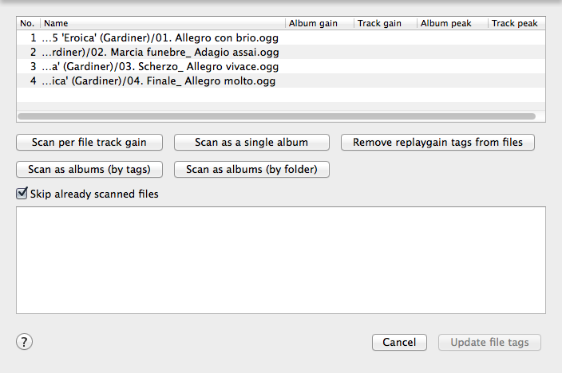

ReplayGain info
Qoobar can help you replaygain your music files. This feature is not yet completely implemented, so only the following file types are supported: mp3, mp4/m4a, musepack, flac, ogg, wavpack.
Qoobar so far uses external utilities to do ReplayGain scanning. You can check whether all utilities can be found by Qoobar in the Utilities page of the Preferences dialog.
Qoobar so far cannot replaygain the following file types: ape, wma, wav, speex, tta, oga, aiff.
Scanning for ReplayGain info:
- Select files, as many as you want. Qoobar will sort these files according to their type, so you cannot scan a folder that contains both mp3 and flac files as a single album.
- In the context menu or the Tools menu click ReplayGain info.... If some files you have selected
have not saved changes, a dialog will appear with the suggestion to save them.
Please save these files if you want to proceed. Then a dialog appears:

- Now you can use one of the buttons to start scanning:
- - All files you have selected will be scanned independently.
- - All files you have selected will be scanned as one album regardless of their path/folder or the "Album" tag.
- - All files you have selected will be sorted according to their "Album" tag and scanned by groups.
- - All files you have selected will be sorted by their path/folder and scanned by groups.
- - The replaygain info will be removed from files.
Note: Qoobar can skip already scanned files. Just check on the "Skip already scanned files" box.
Note: If you are encountering messages like "Couldn't find file" or "The FLAC file could not be opened", open the Preferences dialog and on the Utilities page set the "Copy files into temp folder before replaygaining them" option.
© 2009-2015 Alex Novichkov